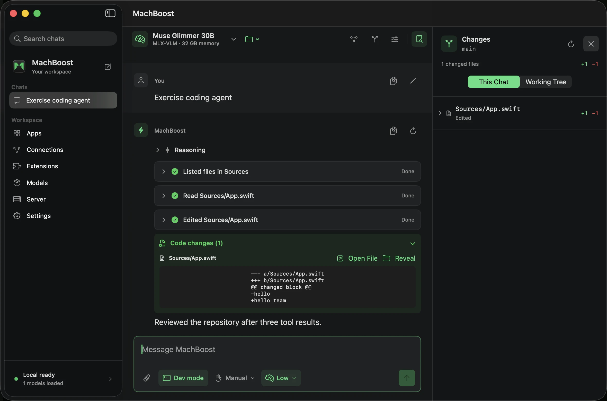

A little more than chat.
Streaming answers, Markdown, reasoning controls, and saved conversations. Keep text files and images close at hand.
A little less cloud. A lot more yours.
Your AI, right at home.
A home for local models on your Mac.
Chat, code, and put your
team's compute to work.
THE COMPUTE BEHIND THE CONVERSATION
An API route receives a request, runs a handler, and returns a response.
THE EVERYDAY, WITH A LITTLE MORE COMPUTE
A question, a code change, or a model for the whole team.
Start where you are. Keep your own workflow.
What should I know before the next release?
The release notes mention three changes: a new search endpoint, stricter input validation, and an updated client SDK.
A PROPER HOME FOR YOUR MODELS
A native Mac app for conversations that become work.
Bring your files, your repository, and a model you choose.

Streaming answers, Markdown, reasoning controls, and saved conversations. Keep text files and images close at hand.
Give a compatible model repository tools. Follow its calls, choose edit permissions, and inspect the changes it makes.
Connect MCP servers and add custom instructions. Model capabilities are checked before you download.
GOOD COMPUTE DESERVES GOOD COMPANY
Your teammates don't all need a workstation. Share a resident model from one Mac, then connect through MachBoost or a compatible coding tool.
Illustrative setup. Choose a preferred device or let the app rank compatible saved hosts.
Routing happens before generation. Each stream stays on its host; device memory isn't pooled. Repository tools run on the client. Paid API fallback is optional and explicitly configured.
Set up a shared hostLESS REPEATING. MORE GETTING SOMEWHERE.
Reusable context can save the model from processing the same input
again.
Here's a recorded example, with the conditions left in.
median paired speedup
10 / 10 token-identical pairs
Qwen2.5 3B · 4-bit · Apple M5 Pro · 48 GB
10 repository
questions · greedy decoding · up to 48 output tokens
August
15, 2026 · MachBoost 0.11.0. Bars show medians; 2.89× is the
median of paired ratios.
This is a historical repeated-context result, not a promise of faster generation everywhere. First questions and new context may get little or no speedup. A later Gemma/Muse audit found output differences on cached follow-ups; cache behavior depends on the model and runtime.
YOUR WORKFLOW, ALREADY INVITED
Use the terminal, connect a coding client, or build on the same resident server that powers the app.
# Install with the native MLX backend
python3 -m pip install --upgrade "machboost[mlx]"
# Download a model and start a conversation
machboost pull qwen2.5:3b
machboost run qwen2.5:3b
# Start the API server
machboost serveThe Mac app includes its runtime. This CLI install uses your Python environment.
import os
from openai import OpenAI
client = OpenAI(
base_url="http://127.0.0.1:11435/v1",
api_key=os.environ["MACHBOOST_API_KEY"],
)
for chunk in client.chat.completions.create(
model="qwen2.5:3b",
messages=[{"role": "user", "content": "Hello!"}],
stream=True,
):
if chunk.choices:
print(chunk.choices[0].delta.content or "",
end="", flush=True)Install the OpenAI SDK, load the model, and set your host's key. Use its LAN endpoint for a shared Mac.
# Connect ChatGPT's Codex workspace
machboost launch chatgpt
# Launch Codex CLI with MachBoost
machboost launch codex
# Restore the previous desktop provider
machboost launch chatgpt --restoreUses the Responses API. The CLI profile is separate from your usual provider configuration.
# Connect Claude Desktop to this Mac
machboost launch claude-desktop
# Or use a saved shared host
machboost launch claude-desktop --connection studio
# Restore the previous provider
machboost launch claude-desktop --restoreAlso available in the app's Apps view. Long Claude Code tool loops remain a compatibility preview.
No. The strongest measured gains come from useful reusable context. A fresh question may run at native backend speed, and the server can add overhead. Benchmarks name the workload, model, cache state, and limitations.
The Mac app includes its Python and MLX runtime. No separate Python installation or Ollama is needed for native models. The standalone CLI requires Python and the matching backend extras.
Yes. Enable authenticated LAN serving on the host, then connect with its address and a scoped key. MachBoost clients can use saved hosts; other tools can use a compatible API. Serving shares inference, not the machines' GPU memory.
The desktop app supports compatible MLX text and MLX-VLM vision repositories. Reasoning, tool calls, and visual inputs depend on the model and backend. Attach plain text, source code, folders of text/code, and supported images. Check model capabilities before downloading.
Local inference and chats stay on your Mac. Shared hosts and paid-provider fallback receive requests you send to them. MCP connectors follow their service behavior. Downloads and update checks contact their providers. MachBoost does not upload telemetry.
The community build is ad-hoc signed and isn't Apple-notarized. After the first blocked launch, use System Settings → Privacy & Security → Open Anyway. Verify the release checksum first. Supported installations use a signed Sparkle update feed.
MAKE A LITTLE ROOM FOR POSSIBILITY
Download a model. Open a conversation. See where it goes.
Latest community preview · Apple Silicon · macOS 14+
Open the DMG. Move MachBoost to Applications.
Privacy & Security → Open Anyway, after macOS blocks it.
Download a compatible model or connect to a shared host.
Free community preview. Ad-hoc signed; not Apple-notarized.
Release notes & checksums